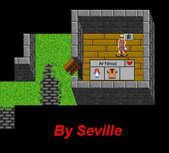
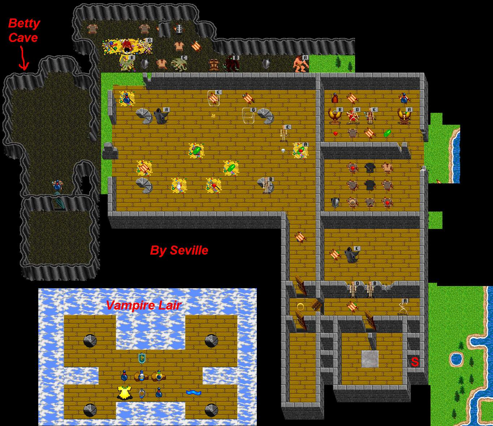

| Betty - Vampire Lair |
 |
| Go see Betty's father and get her doll. Hold it in your hand to lead her home safely. Guard her well as she is frail and has only 1 HP. |
 |
| Back to Frore. |
| Clear a path to lead Betty home. Mentalist can wall off crits to keep her safe. Go upstairs to kill the Vampire for its heart to trade for Vamp Gauntlets. Blow the walls to deal with the Frore Minotaur. Loot his lair for good pots. |
| To Vampire Gauntlet Trader. |